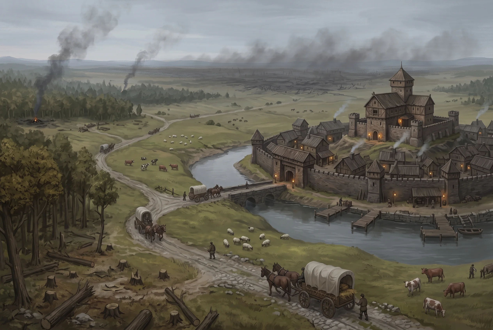
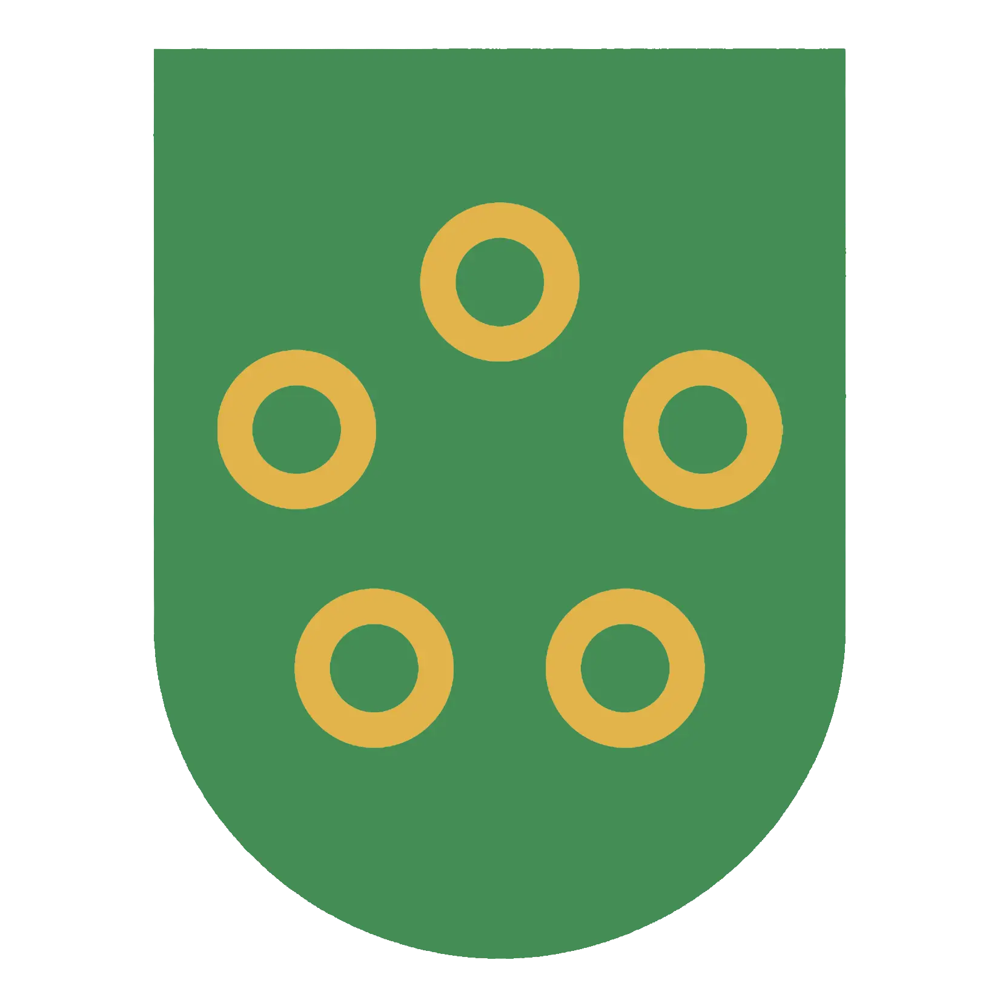

Nysis
Confederation of urbestroy · no capital · richest country in the region and the least governed
Region: Nysis · Location: Coast Location detail: The northern coastal country, from Piscis round to the Pinna
Nysis has the sea, the iron, the timber and the blight. It is, after Freeport, the wealthiest country anybody here deals with, and a traveller crossing it will go four days without meeting an official of any kind. Both of those facts have the same cause.
There Is No Nysis
Not in the sense a Mososi courtier means it. There is no capital, no crown that matters, no treasury, no national law, no standing force and no office anyone could petition. What there is instead is five towns strung along bad roads through forest, mountain and blight, each of which has spent two hundred years solving its own problems because there was never anybody else to ask. Four of them you can name: Piscis, Ostrea, Fluenti and Collima. The fifth is dealt with below.
Each is ruled by an urbestro. He is not a local official of a national government; within a day’s ride he is the government, entire. He raises what levies he can, keeps what watch he pays for, judges what disputes reach him, and answers in practice to nobody. How a man becomes one differs from town to town and nobody has ever tried to make the forms agree (some towns elect among their propertied men, some confirm a family that has held it for four generations, one openly sells it) and the only thing every method has in common is that the people doing the choosing are the people with something to lose. The laws of Nysis favour merchants and guilds, which is another way of saying they favour whoever the urbestro’s own money comes from.
The practical consequence for anyone travelling: there is no such thing as Nyssian law. There are five legal systems, they do not recognise each other’s judgments, and a debt, a charge or a marriage that is binding in Collima may be a curiosity thirty miles down the road. Guilds exist partly to paper over exactly this, which is why the Refiner’s Guild and the coopering and carting guilds carry weight out of all proportion to their numbers: a guild ticket is the only document in the country that means the same thing everywhere.
The Chevayo
Twice a year the urbestroy meet in a rotating town for a chevayo (a corral) and settle what cannot be settled locally: road upkeep, tolls, bandit seasons, disputes between towns, and the division of the country’s one great shared asset.
It has no power to compel anyone. It has never had any and nobody has ever proposed giving it any. It works because every urbestro present wants it to keep working, and the reason they want that is money.
The Lease Is The Constitution
Nysis does not extract mana. Nysis leases the right to, and the lessee is the Conclave, which holds its monopoly on extraction and refinement by grant of the chevayo and pays heavily for it every year.
The order takes the ground and will not take the country. It has been offered ground for a house at Collima twice and refused twice, and it keeps its seat, its archive and its archmage in Freeport, where nobody asks an Acolyte what grade he was born at. Nysis has the ore, the grant and the payment, and no order house, and does not connect the three.
That payment does not go to a treasury, because there is no treasury. It is divided among the urbestroy and it goes into their pockets. Everything about how this country behaves follows from that:
- Every mayor has an income that has nothing to do with his own town and cannot be taken from him by his own people. He can be unpopular indefinitely.
- Nyssian towns are lightly taxed by regional standards, and the reason is not benevolence. A man with an outside income does not need to squeeze the people he lives among, and would rather not.
- Any proposal to open Ravenna to a second party (a rival order, a Buralian concern, an independent combine) is an attack on every urbestro at once, and they answer as one. It is the only thing they ever do as one.
- The blight that cuts the country in half and poisons its ground is, to the men who govern Nysis, the most reliable thing they own.
Shares are set by the chevayo and are not public. Seniority, leverage, and how much trouble a given urbestro is prepared to make.
The Fifth Ring
Four urbestroy come to the chevayo. Five shares are counted out.
The fifth is drawn against a town in the far north, past the last of the road and well beyond anything this Atlas covers, and it is collected every year by a man who arrives with a proxy in order, signs a name the clerks copy without comment, and goes back the way he came. He is not always the same man. The name is not always spelled the same way.
Nobody at a chevayo in living memory has been there. Nobody has refused the share either, because refusing it would mean saying out loud that the count is four, and a country whose entire constitution is the division of one payment does not open the question of how many ways it divides. So the fifth share goes north every year, and the fifth ring stays on the flag.
The urbestroy of Piscis and Ostrea have each, privately, made enquiries. Neither will discuss what came back.
Law, Debt and the Pinna
What Nysis has instead of a criminal system is a labour market with a magistrate attached.
Terms at the Pinna workings are the standard sentence for a wide range of offences, handed down at Freeport and in every town with a magistrate, and handed down freely because the mines always want bodies and everybody involved understands that they do. Debt runs the same way by a different door: a debt can be worked off at the workings, and the arithmetic of how fast is done by the company holding both the debt and the wage book.
The sentence is passed in open court by men who have never seen a working. It is worth setting beside what the Ecclesia does quietly with its oblates, because the mechanism is identical and only one of the two is a scandal.
Force
There isn’t any, nationally. No army, no navy, no muster.
What exists is town watches (a dozen men in a small place, a few score in Freeport) and guard companies, which are private, hired by the trip, and the reason anything moves through the Nebula or down the Termin road at all. Collima alone supports three. They are competent, they are not loyal to anything, and a company that has sold a caravan’s route and timings to someone else has done something contemptible rather than treasonous, because there is no state to betray.
This is not a problem for Nysis in the way it looks. Nobody has invaded in living memory. Mososi cannot: it is landlocked, its quarrel is commercial, and it would have to come through Termin in front of everybody. The Verdani raid Ravenna and want nothing that Nysis would fight a war over. The country is not defended because it has not needed to be, and every urbestro understands that the day it does need to be will find five towns discovering they have no mechanism for anything.
Faith
The Pura Ecclesia is strong here and strongest on the coast, and its Puritan grading (Pure, Prime, Second, Third, Feral) is the ordinary social ladder of Nyssian life. An inquisitor attends a cradle. A Touched child whose beast-nature does not match its parents’ is removed. Collima will not let a Touched girl walk the open street, and that is not eccentricity, that is the mainstream.
The Ecclesia sets the abstinence calendar that a third of the year runs on, which makes it the largest single buyer of food in the region and gives it more practical leverage over Piscis and Ostrea than any urbestro has. No mayor has ever tried to tax it and none is going to.
What Would Break It
Nothing internal. The chevayo has survived two centuries of men who despised each other because none of them wanted to lose the payment.
The exposure is that the payment depends on the Conclave’s ability to pay, and the Conclave’s ability to pay depends on selling refined mana, and its largest customer by a wide margin is the Ecclesia, which has spent a decade quietly arranging not to need it, four hundred miles east behind a mission wall at Spero.
Nobody in Nysis knows this. If the order’s revenue falls, the lease payment falls, every urbestro’s private income falls with it, and the only thing holding five ungoverned towns together is a number getting smaller every year for reasons none of them can see. There is no institution in this country capable of noticing that in time and no procedure whatever for what happens next.
Heraldry

Vert, five annulets Or in annulo
The green is the timber country the money used to come from. The rings are the urbestroy: equal, unjoined, and arranged around an empty middle, which is an accurate constitutional diagram and was adopted as a compromise rather than as a statement. A device with anything at the centre would have meant somebody was at the centre, and no proposal of that kind has ever survived a chevayo.
It is flown on hulls and at the border posts, because ships must fly something and a customs house must hang something. At home nobody flies it. At home you fly your own town.
Motto: What we agree, we agree.
The chevayo that adopted the arms considered four mottoes and carried this one. The three that failed all contained a verb somebody could later be held to. It went onto the customs boards and the stern boards along with the rings, and a Freeport clerk reading it at the head of a tariff schedule will tell you it means the confederation honours its contracts. It means the confederation honours the contracts it has already honoured. Nyssians find this funny and have never explained it, because the misunderstanding has been worth money for two hundred years.
That chevayo is minuted, because Ostrea’s clerk minuted everything, and four proposals are on the sheet.
We keep our word, from Ostrea, died in the hour. Five towns with no common court and no way of compelling one another had been asked to put a promise on a flag, and every man in the room could see the first Freeport creditor stiffed at Collima carrying that flag into a hearing and reading it out. A confederation that cannot be sued should not be quotable.
Five shares, five towns, from Fluenti, who was smallest that year and wanted the count fixed before it got smaller. It states a number nobody wants a foreigner holding and implies the shares are equal, which they are not and were not then. It is also the only proposal that mentioned the money. The chevayo does not mention the money.
Which is why the richest country in the region has never issued a coin. Striking one means settling whose device is on the face and how many shares there are, and those are the two questions this confederation exists in order not to put on a sheet. Nysis pays in whatever came through the door: Freeport coin on the coast, Mososi rounds around Termin and Fluenti, foreign silver off the Ostrea and Piscis quays. Every market of any size keeps a scale and a board of what passes, the boards disagree town to town, and the lease payment that holds the five together arrives every year in Freeport’s money. See Currency and Prices.
Pure and free, from Collima, who meant it. Fluenti observed that it puts the Ecclesia in the middle of a device built to have nothing in the middle, and that Fluenti sells timber to Mososi without asking what grade the buyer’s children are. Collima has not proposed anything since.
The fourth is not attributed to anyone. It carried four to nothing, the fifth ring’s proxy signed under it the way the proxy signs under everything, and the men who were in the room have been dead a hundred and seventy years.